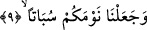

anmakla yetinme kabilinden olsa gerektir.
Kadın için “zevce” kelimesinin kullanılması, uygunsuz bir isimlendirmedir. Çünkü
Allah “Biz Ey Adem sen ve eşin (zevcuke) beraberce cennette yerleşin...dedik” (el-
Bakara 2/35) âyetinde kadın için “zevce” değil “zevc” kelimesini kullanmaktadır:
İster birbirine benzer olsun, ister birbirine zıt olsun birbirine bitişik olan her iki şeye
Arapçada “zevc” denilir. Bu sebeple bâzı âlimler bu âyete şöyle mânâ vermişlerdir:
Sizleri, birbirine karşılık gelen vasıflarla vasıflanmış olarak yarattık. Bu vasıflardan
herbiri karşısındaki vasıfla bir çift oluşturmaktadır. Fakirlikle-zenginlik, sağlıkla-
hastalık, ilimle-cehâlet, kuvvetle-zayıflık, erkeklikle-dişilik, uzunlukla-kısalık ve
benzeri gibi. İşte siz bunlarla imtihan olacaksınız. Dolayısıyla bir iyilik, bir üstünlük
elde eden şükürle meşgul olur. Bunu elde edemeyen kimse ise sabırla meşgul olur. Sabır
mertebesinden şükür makamına yükseldiğinde nimetin değerini bilir. Bütün bunlar Allah
Teâlâ’nın kudretinin mükemmelliğine ve hikmetinin zirvede oluşuna delildir.
9. Uykunuzu bir dinlenme kıldık.
“Uykunuzu” ölüm gibi “bir dinlenme kıldık.” Uyku kendisine doğru yükselen buhar
nemleri dolayısıyla beyin sinirlerinin gevşemesi, kendini salıvermesidir. Bu sebepledir
ki sözünü ettiğimiz nem ve rutûbet az olduğundan dolayı riyâzat ehlinde uyku az olur.
Âyette yer alan “sübâten” kelimesi “ölüm” demektir. Kasdedilen ise, uykunun ölüm
gibi olduğu gerçeğidir. Bu kelimeden türetilerek ölüye “mesbut” denilir. Kelimenin
kökü “sebt” olup sözlük anlamı; “kat’/kesmek” demektir. Ölmüş kimse hareketten
kesilmiş olacağı için kendisine bu kökten türeme bir isim verilmiştir. Yine kelimenin
kökündeki “kesme” anlamından dolayı cumartesi gününe “yevmu’s-sebt” denilir. Bu
isimlendirme sebebsiz değildir. Allah Teâlâ gökleri ve yeri yaratmaya pazar günü
başlamış ve altı günde tamamlamış; sonra cumartesi günü yaratma işini sona erdirmiş
yâni yaratmayı kesmiştir. Bundan dolayı da cumartesi gününe “yevmu’s-sebt” denmiştir.
Yine cumartesi günü İsrailoğulları’nın her türlü işten kesildikleri gündür.
Uyku iki ölümden birisidir. Nitekim Allah Teâlâ bu gerçeği Zümer sûresinde şöyle
dile getiriyor: “Allah, ölenin ölüm zamanı gelince, ölmeyenin de uykusunda iken
canını alır.” (ez-Zümer 39/42) Uykuya ölüm denmesi sebebsiz ve hikmetsiz değildir.
Çünkü ölümle uyku arasında yaşama belirtilerinin kesilmesi noktasında tam bir
uyumluluk ve ortaklık vardır. “Sübâten” kelimesinin sonundaki “tenvin” “nev’iyet/
çeşitlilik” bildirir. Buna göre âyet-i kerîmeye mânâ vermek gerekirse; “biz sizin
uykunuzu bir çeşit ölüm kıldık” denmiş olur. Bu ölüm, kesilen ve devam etmeyen bir
ölümdür. Çünkü uyku denen ölümde ruhun ışığı sadece bedenin zâhirinden kesilir. Bu
itibarla uykuya ölümün kardeşi demişlerdir. İhtiyaç mikdarınca alınan uyku büyük bir